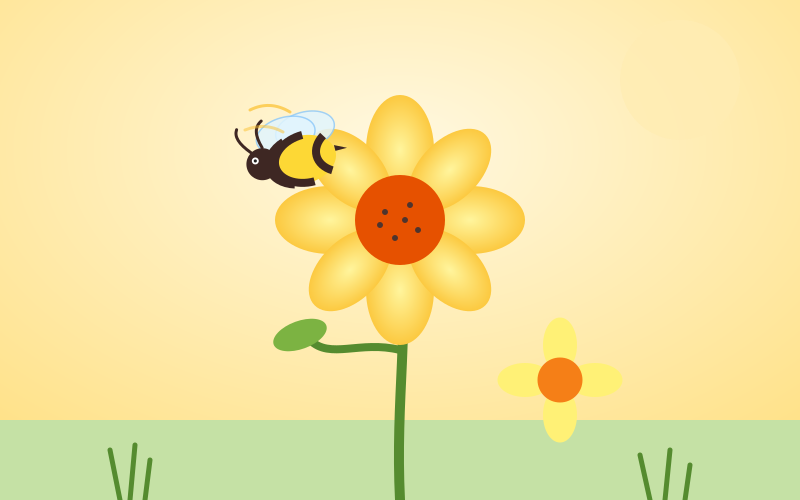

Discover the fascinating world of nature's hardest working pollinators.

A honeybee visiting a flower to gather nectar and pollen.
Bees are among the most important creatures on Earth. As they move from flower to flower collecting nectar, they transfer pollen that allows plants to reproduce. This process, called pollination, supports roughly a third of the food crops we eat every day, from apples and almonds to squash and coffee.
A honeybee colony is a marvel of teamwork. Thousands of worker bees, a single queen, and a small number of drones share the labor of building honeycomb, raising young, foraging for food, and defending the hive. Each bee has a role that shifts as it ages, moving from cleaning duties as a young bee to foraging outside once it matures.
Bee populations face pressures from habitat loss, pesticides, and disease. Planting native flowers, avoiding unnecessary pesticide use, and supporting local beekeepers are simple ways anyone can help these vital pollinators thrive.